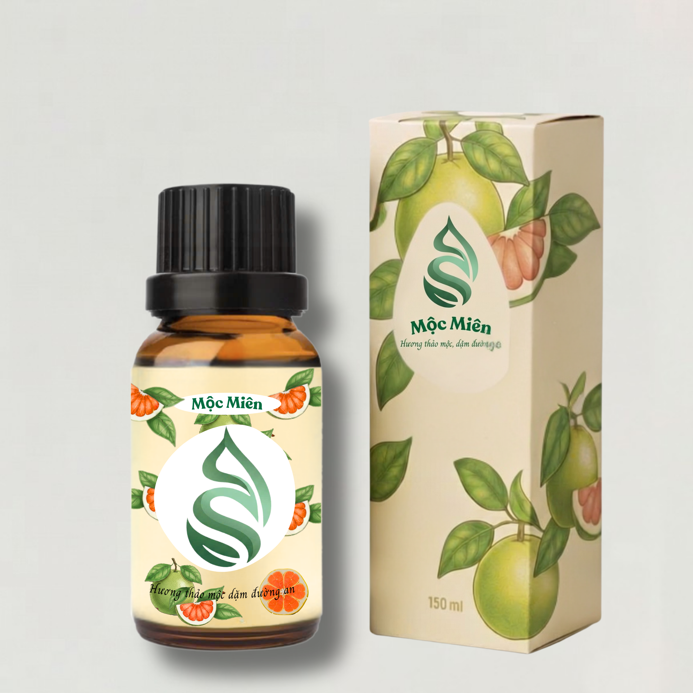
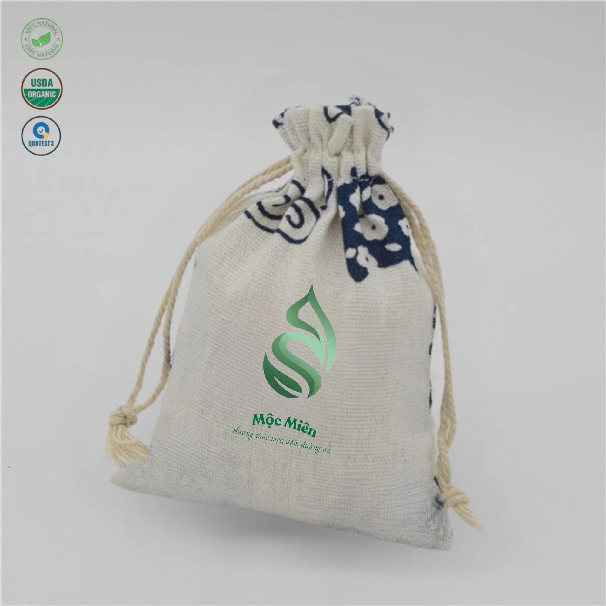
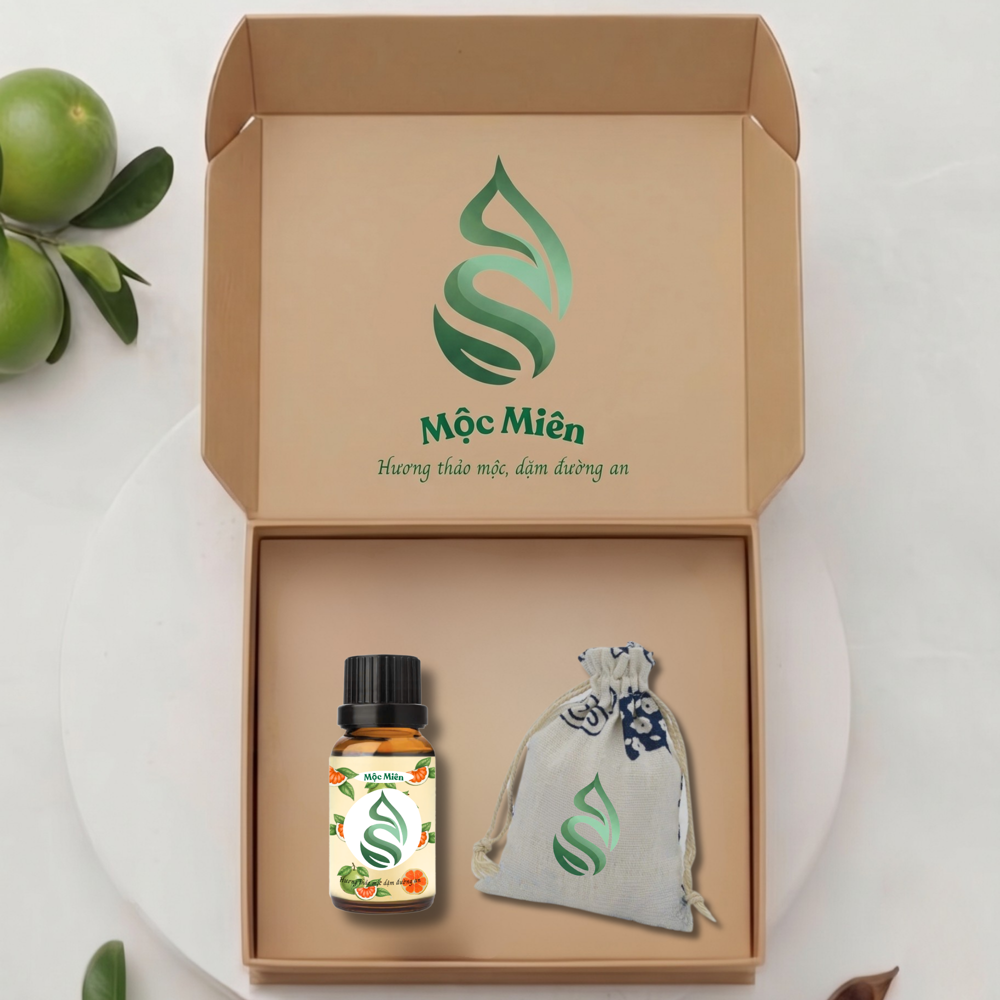

Thư giãn – Dễ chịu – Hành trình trọn vẹn
Mộc Miên được ra đời từ sự thấu cảm sâu sắc với nỗi sợ say xe – rào cản vô hình khiến nhiều người phải khép lại giấc mơ khám phá và bỏ lỡ những cơ hội gắn kết ý nghĩa. Chúng mình tin rằng, mỗi chuyến đi không chỉ là sự di chuyển, mà là hành trình tự do để mỗi cá nhân tìm thấy niềm vui và sự cống hiến của chính mình.
Từ nguồn nguyên liệu mộc mạc của đất mẹ như vỏ cam, bưởi khô và các loại thảo mộc tự nhiên, Mộc Miên mang đến dòng sản phẩm giúp xoa dịu khứu giác và hệ thần kinh. Từng giọt tinh dầu được chưng cất tỉ mỉ, lưu giữ hương thơm thanh khiết để thay thế cho những hỗn hợp mùi xăng xe hay máy lạnh độc hại. Đây không chỉ là một giải pháp hữu hiệu cho những người có khứu giác nhạy cảm, mà còn là sự vỗ về dịu dàng cho tâm trí trong suốt những hành trình dài.
Giá trị nhân văn của Mộc Miên nằm ở việc trả lại sự tự tin cho người sử dụng. Khi nỗi lo say xe không còn là nỗi ám ảnh, khứu giác được thư giãn giữa không gian thảo mộc, bạn sẽ không còn cảm thấy ái ngại vì sợ làm phiền người xung quanh. Một tinh thần tỉnh táo, một cơ thể khỏe mạnh trên xe chính là tiền đề để bạn bước xuống hành trình với đầy đủ năng lượng và sự nhiệt huyết.
Chúng mình gửi trao mỗi sản phẩm Mộc Miên đi không chỉ mang theo hương vị của thiên nhiên, mà còn mang theo tâm huyết về một thế giới không khoảng cách. Nơi mà bất kỳ ai cũng có thể tự tin bước lên những chuyến xe để đi và cảm nhận vẻ đẹp của cuộc đời một cách trọn vẹn nhất.
Mộc Miên – Hương thảo mộc, dặm đường an.

Giá: 30.000 VND

Giá: 25.000 VND

Giá: 49.000 VND
Email: mocmien@gmail.com
Phone: 09xx xxx xxx